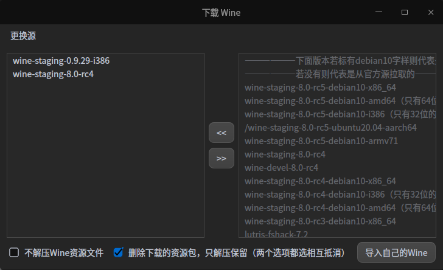

Wine 列表（来自 Wine 运行器）
点击下方链接下载编译好的 7z 包
推荐在 Wine 运行器内安装

更新时间：2023年2月11日 22:33:24
——————下面版本若标有debian10字样则代表是作者从上游拉取编译的——————
——————若没有则代表是从官方源拉取的——————
wine-stable-8.0
wine-staging-8.1
wine-staging-8.1-debian10-x86_64
wine-staging-8.1-debian10-amd64（只有64位的，无32位）
wine-staging-8.1-debian10-i386（只有32位的，无64位）
wine-ce-8.1-armhf
wine-staging-8.1-ubuntu20.04-aarch64
wine-stable-8.0-debian10-x86_64
wine-stable-8.0-debian10-amd64（只有64位的，无32位）
wine-stable-8.0-debian10-i386（只有32位的，无64位）
wine-ce-8.0-armhf
wine-staging-8.0-rc5
wine-devel-8.0-rc5
wine-staging-8.0-rc5-debian10-x86_64
wine-staging-8.0-rc5-debian10-amd64（只有64位的，无32位）
wine-staging-8.0-rc5-debian10-i386（只有32位的，无64位）
/wine-staging-8.0-rc5-ubuntu20.04-aarch64
wine-staging-8.0-rc5-debian10-armv71
wine-ce-8.0-rc5-armhf
wine-staging-8.0-rc4
wine-devel-8.0-rc4
wine-staging-8.0-rc4-debian10-x86_64
wine-staging-8.0-rc4-debian10-i386（只有32位的，无64位）
wine-staging-8.0-rc4-debian10-amd64（只有64位的，无32位）
wine-ce-8.0-rc4-armhf
wine-staging-8.0-rc3-debian10-x86_64
lutris-fshack-7.2
wine-staging-8.0-rc2-debian10-x86_64
wine-staging-8.0-rc1-debian10-x86_64
wine-stable-7.0.1
wine-stable-7.0
wine-staging-7.22
wine-staging-7.22-debian10-x86_64
wine-staging-7.22-debian10-i386
wine-devel-7.22-debian10-x86_64
wine-staging-7.21
wine-staging-7.21-debian10
wine-staging-7.20
wine-staging-7.19
wine-staging-7.19-debian10-x86_64
wine-staging-7.18
wine-staging-7.18-debian10-x86_64
wine-staging-7.17
wine-devel-7.17
spark-wine7-devel-7.17~spark-1
spark-wine7-devel-7.17
wine-staging-7.16
wine-devel-7.15
wine-staging-7.15
spark-wine7-devel-7.14
wine-devel-7.12
wine-devel-7.5
wine-staging-7.4
wine-staging-7.2
wine-staging-7.0
deepin-wine6-stable
lutris-6.4-i386
wine-stable-6.0.4
wine-staging-6.18
wine-staging-6.7
wine-staging-6.1
wine-staging-6.0-amd64
deepin-wine5-stable
wine-stable-5.0.4
wine-staging-5.22
wine-staging-5.1
wine-staging-5.0-rc4-amd64
wine-staging-5.0-rc4
wine-stable-4.0.4
proton-4.2-i386
wine-staging-4.21
wine-stable-3.0.5
proton-3.16-amd64
proton-3.16-i386
proton-3.7-i386
wine-staging-3.21
wine-staging-3.1
wine-staging-2.22
wine-staging-2.18-amd64
wine-staging-2.18
wine-0.9.29-i386
wine-staging-7.19-debian10-amd64-demo
wine-staging-7.18-debian10-amd64
wine-staging-7.18-debian10
wine-staging-7.18-demo


Wine 运行器

©2020~2023 gfdgd xi、为什么您不喜欢熊出没和阿布呢